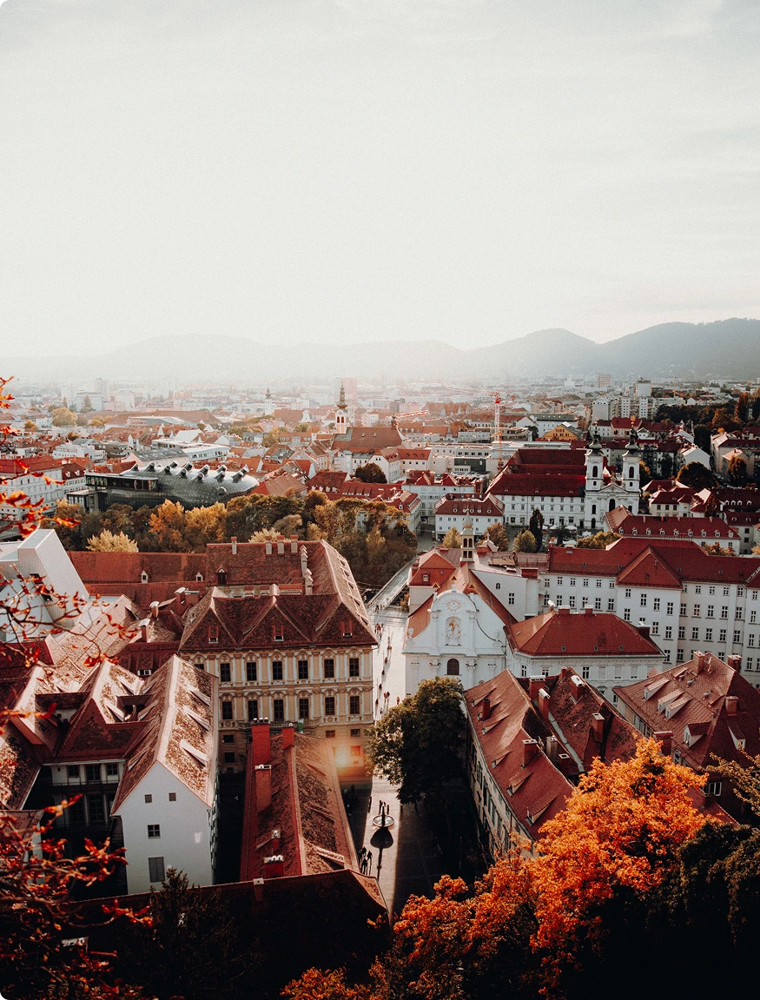
Discover a country where every corner tells a story. From the legendary coffee houses and baroque palaces of Vienna to the crystal-clear lakes and snow-capped peaks of the Tyrolean Alps, Austria offers a unique blend of cultural sophistication and raw natural beauty. Whether you are seeking world-class classical music, breathtaking hiking trails, or the charm of traditional mountain villages, Austria invites you to experience a journey that stays in your heart forever.
Every path in Austria leads to a new discovery. Beyond the iconic landmarks, you will find a commitment to tradition and a passion for life that resonates in every village and valley. We invite you to explore our heritage, breathe the purest mountain air, and create your own unforgettable Austrian narrative. Your journey through the heart of Europe begins now.
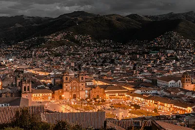
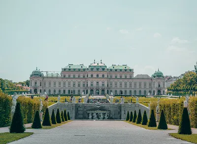
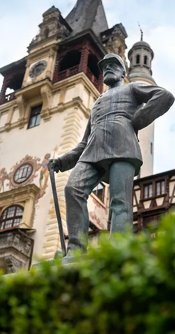
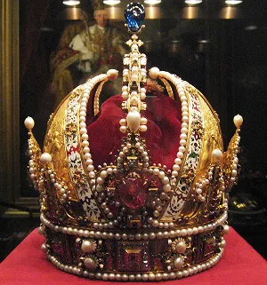
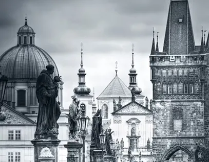
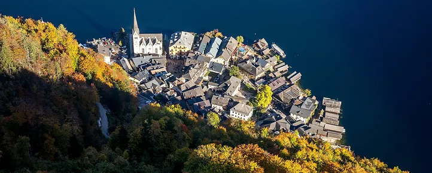
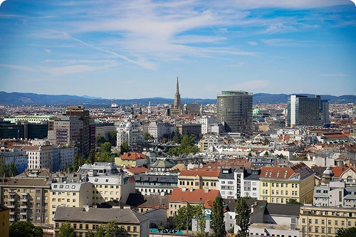
Experience the grandeur of the Habsburg Empire through its baroque palaces, historic coffee houses, and world class museums.
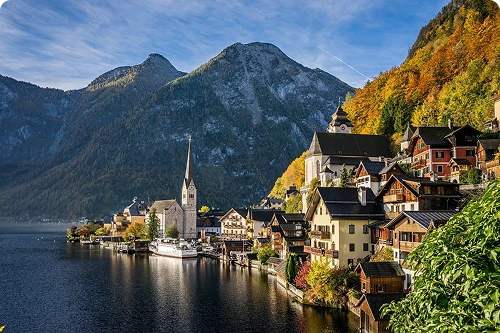
Wander through the world-famous lakeside village of Hallstatt and discover the breathtaking majesty of the Austrian Alps.
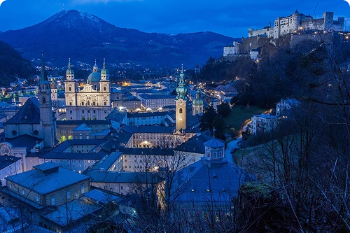
Visit the birthplace of Mozart and the filming locations of the famous 'The Sound of Music' in this UNESCO World Heritage city.
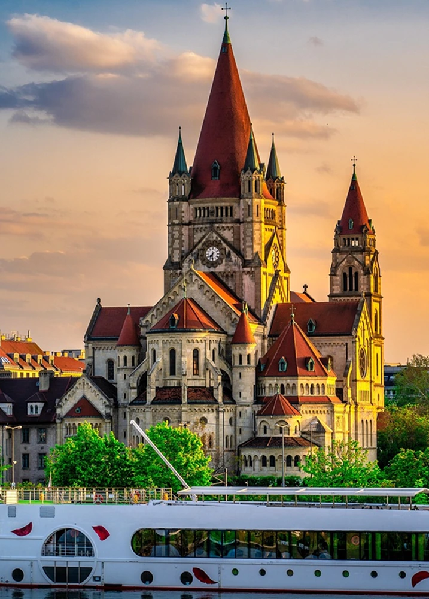
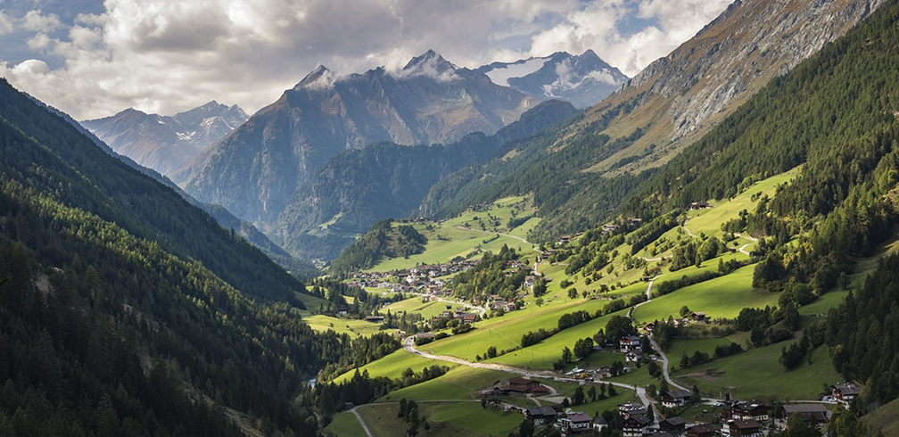
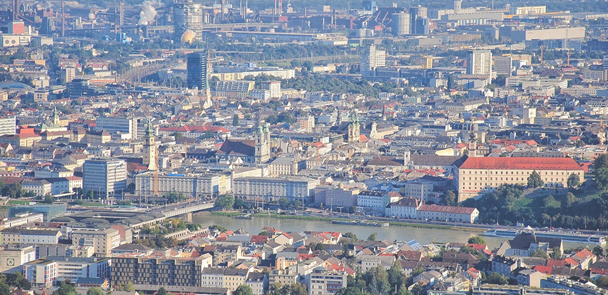
Austria is more than just a destination; it is a tapestry of experiences waiting to be unraveled. Our curated routes are designed to take you beyond the typical tourist spots, immersing you in the authentic rhythm of Austrian life. Whether you are walking through the golden halls of imperial palaces where history was written, or finding serenity by the emerald waters of a hidden alpine lake, each journey is crafted to create memories that resonate.
We invite you to explore the contrast between our vibrant, cosmopolitan cities and the raw, untouched beauty of the mountains, ensuring that every mile traveled tells a story of elegance, tradition, and wonder. From the musical heritage of our urban centers to the peaceful silence of the peaks, your adventure is just one click away.
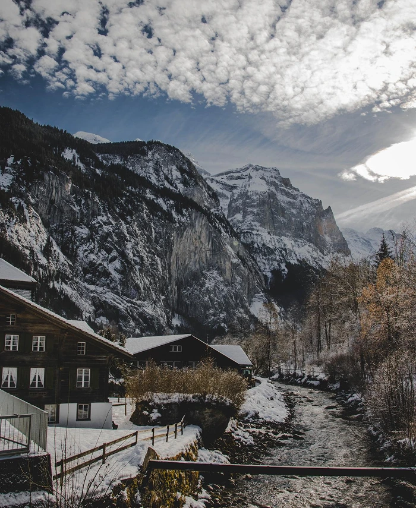
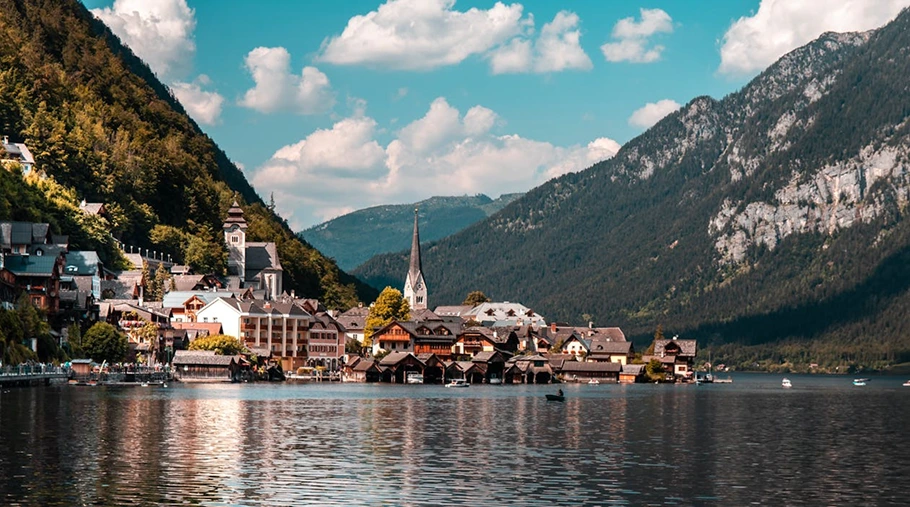
Planning your perfect getaway has never been easier thanks to our diverse range of itineraries tailored to every traveler’s passion. From the high-speed efficiency of the ÖBB Railjet connecting our cultural hubs to the scenic freedom of an e-bike tour through UNESCO-protected vineyards, we provide all the essentials for a seamless trip.
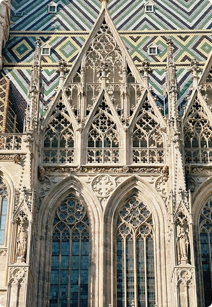
Austria is more than just a destination; it is a tapestry of experiences waiting to be unraveled. Our curated routes are designed to take you beyond the typical tourist spots, immersing you in the authentic Austrian life.
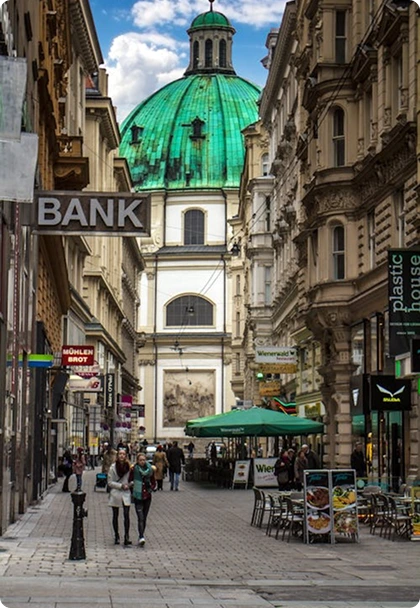
Waking up in Hallstatt felt like stepping into a fairy tale. Watching the mist clear over the lake as the village came to life is a memory I'll cherish forever. The guide helped us find this perfect spot away from the crowds.
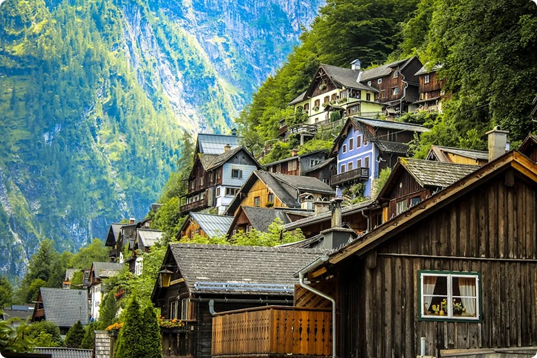
The forest trails felt like a hidden world. Pure tranquility and breathtaking views at every turn. An absolute must for nature lovers.